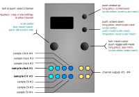

Quantermain

Input/output assignment
| I/O | Function |
|---|---|
| TR1, TR2, TR3 & TR4 | Mappable as the trigger input for each channel A to D, independently (except when Trigger source is set to cnt+ or cnt- — see below) |
| CV1, CV2, CV3 & CV4 | Mappable as the external CV input to be quantised for each channel A to D, independently, or can be mapped to control various parameters when internal CV “sources” (e.g. built-in Turing Machines) are used. |
| A | Output voltage for channel A (quantised if quantisation is enabled) |
| B | Output voltage for channel B (quantised if quantisation is enabled) |
| C | Output voltage for channel C (quantised if quantisation is enabled) |
| D | Output voltage for channel D (quantised if quantisation is enabled) |
Controls
| Control | Function |
|---|---|
| Left encoder (turn) | Select channel, or note in scale in scale edit mode |
| Left encoder (press) | Increment channel by one |
| Right encoder (turn) | Navigation mode: move up and down through the menu items. Edit mode: increase or decrease the value being edited. |
| Right encoder (press) | Toggle between menu navigation (selection) mode and value editing mode |
| Right encoder (long press) | App selection menu |
| Up button | Transpose up one octave for currently displayed channel |
| Down button | Transpose down one octave for current displayed channel |
| Up button long | screen saver short cut |
| Down button down | reset scale mask |
Available settings (per-channel)
| Setting | Meaning |
|---|---|
scale |
Current scale |
Root |
Root note for scale |
Active notes |
“scale mask” / active note pattern in the selected scale |
CV Source |
external CV source (CV1 to CV4) or internal value sources (Turing Machine or Lgstc (logistic map) or ByteB (byte beats) or IntSq (integer sequences) for the current channel |
CV aux > |
auxillary CV destination: root, oct, trns, or mask (enabled only when using a non-default CV setting for CV Source is used, e.g. if CV2 is selected as the source for channel A, then CV1 can be re-mapped using CV aux. CV aux is not enabled if any of the internal pseudo-CV sources (Turing Machine/LFSR, byte beats etc) are selected).) |
Trigger source |
Trigger input source (TR1 to TR4, or cnt+ or cnt- for continuous quantisation, see below for discussion of continuous quantisation) for the current channel |
Clock div |
Clock divider for the trigger input selected for the current channel (note: the same trigger source may have different clock dividers set in each channel) |
Trigger delay |
sets the delay between receiving a trigger or gate (rising-edge) on the chosen trigger input for the current channel, and the input voltage being sampled. It defaults to Off (no delay beyond the normal latency, which is less than 100 microseconds, typically about 50 microseconds), but available values are 120us, 240us, 360us, 480us, 1ms, 2ms and 4ms. (†) |
Transpose |
Transpose up or down of output CV for current channel (in scale-degrees) |
Fine |
Fine tuning control, adjusts the pitch CV for the current channel up or down in tiny increments. |
4 channel quantizer, integrates the quantiser from the Mutable Instruments Braids module, but expands it with interactive scale-edit functionalities (99 pre-defined scales (editable in the source code - see instructions here - are included, plus 4 fully user-definable scales (with a maximum of 16 notes per octave and additional finetune/microtonal edit options)).
-
for further information re custom scales, microtonal scales and tunings see here and here.
-
if properly, calibrated, the output accuracy should be fairly excellent (is fairly excellent) due to the use of the precision TI 16-bit DAC; the trigger-to-quantised-output latency is also very decent: < 100 microseconds.
-
the four channels are fully independent, but can be slaved to the same clock and/or track the same CV sources, if desired. here’s the default mapping:
- (†) o_C is very fast, and typically will sample an input voltage just a few tens of microseconds after receiving a trigger signal (in triggered/clocked quantisation mode). If a sequencer or some other stepped voltage source is being sent to the quantiser, then that voltage may still be slewing to its new intended voltage when o_C samples it, or if this source is digital, there may be a few tens of microseconds delay before the voltage source reacts to the trigger signal (assuming it is the same trigger signal that has been sent to o_C) and starts to slew to the new voltage. If this is the case, the Quantermain, CopierMaschine, Harrington 1200, Automatonnetz, Meta-Q, Sequins or Acid Curds apps will be sampling and quantising the previous sequence (or transposition or root note) step CV, or the may be sampling the CV as it is slewing to the new value. In such cases, increase the
Trigger delaysetting until the new CV is reliably sampled after each new trigger/clock signal is received. Note that use of a shorter trigger delay than that required to reliably sample the input CV may result in “wrong notes”, but this may have creative uses, because the wrong notes will still be quantised and constrained to the chosen scale. These considerations only apply when using Quantermain in trigger mode and to the CopierMaschine app, which can only be used with an external trigger) — they do not apply whenTrigger Sourceis set tocnt+orcnt-( = continuous quantization) in Quantermain.
Method of operation
-
When used as a voltage quantiser, for each of the four independent channels, the Quantermain app reads an input voltage from the CV source set for that channel and quantises it to the scale and notes set for that channel, and then applies any post-quantisation transpositions that have been specified. Voltages are read an a new quantised voltage is output when the trigger source specified for that channel fires (rising edge of the trigger, clock or gate signal), unless
Trigger sourceis set tocnt+orcnt-, in which case quantisation is performed continuously on the input voltage. The latency from receipt of a trigger to output of a newly quantised note is under 100 microseconds, and is typically about 50 microseconds. In continuous quantisation mode, the input voltage is read at an effective rate of about 1 kHz, thus quantisation of the input occurs approximately once every millisecond. -
When
CV sourceis set to an input channel other than the default/nominal input (e.g. channel #2 is set toCV source=CV4), the default input can be re-mapped to a different channel parameter. SeeCV aux >. -
When the
CV sourceis set toTuring,Lgstc,ByteBorIntSq, instead of reading a voltage on one of the CV inputs (CV1toCV4), an internally generated value is used instead (for that channel - you can use the internal sources on some channels and external CV sources on others if you wish). Details of each of these internal sources follow.
Note: the Turing Machine, Logistic Map, byte beat and integer sequences sources all require external clock inputs to make then step, and thus they do not operate when Trigger source is set to cnt+ or cnt-.
The internal Turing Machine source
The Turing source uses a linear-feedback shift register (LFSR) randomly seeded with habit pattern, which is right-shifted by one bit at each clock step (read from the Trigger source for that channel). There is a settable probability that the least-significant bit is randomly each time the pattern is shifted by one. This arrangement was popularised in modular synthesis as the Richter Noise Ring and the Music Thing Turing Machine. The name of the latter module has been borrowed here (see acknowledgements).
If a Turing Machine has been selected as as the CV Source, then the following additional settings are made available:
| Setting | Meaning |
|---|---|
LFSR length |
length of the linear feedback shift register, in bits, range 2 to 32 |
LFSR modulus |
sets the modulus for the integer value output from the LFSR. The value of the integer from the LFSR is divided by the modulus and the remainder is used. For example, if the modulus is 8 and the current integer value from the LFSR is 19, then the remainder of 19 - (2 x 8) i.e. 3 is used as the value. In other words, values “wrap around” at the modulus setting value — it sets a maximum note range for the LFSR, similarly to the LFSR range setting, but LFSR range compresses or expands the range of notes for a given integer value from the sequence, whereas the modulus wraps the values around. Note: the LFSR modulus setting and any external voltage input as set by LFSR mod CV src have no effect on the LFSR is no scale is selected. |
LFSR range |
the range or span of notes available to the LFSR (Turing Machine) from which a note is selected |
LFSR prb |
probability that the least significant bit will be flipped when it to copied |
LFSR p CV src |
(v1.1 or later only) The control voltage source (none, or CV1, CV2, CV3 or CV4 inputs) used to control the probability. The CV value is added to the probability value set via the LFSR p menu item (see above). |
LFSR mod CV src |
(v1.2 or later only) The control voltage source (none, or CV1, CV2, CV3 or CV4 inputs) used to control the modulus of the values output by the LFSR (Turing Machine) from which a note is selected. The CV value is added to the LFSR modulus value set via the LFSR modulus menu item (see above). |
LFSR rng CV src |
(v1.1 or later only) The control voltage source (none, or CV1, CV2, CV3 or CV4 inputs) used to control the range or span of notes available to the LFSR (Turing Machine) from which a note is selected. The CV value is added to the range value set via the LFSR range menu item (see above). |
The internal Logistic Map source
If a Logistic Map has been selected as as the CV Source, then the following additional settings are made available:
| Setting | Meaning |
|---|---|
Logistic r |
The r coefficient for the logistic map equation |
Logistic range |
The range or span of notes available to the Logistic Map from which a note is selected. |
Log r CV src |
(v1.1 or later only) The control voltage source (none, or CV1, CV2, CV3 or CV4 inputs) used to control the r coefficient for the logistic map equation. The CV value is added to the r value set via the Logistic r menu item (see above). |
Log rng CV src |
(v1.1 or later only) The control voltage source (none, or CV1, CV2, CV3 or CV4 inputs) used to control the range or span of notes available to the Logistic Map from which a note is selected. The CV value is added to the range value set via the Logistic range menu item (see above). |
Logistic seed |
The seed value to initialise the logistic map (has very little effect, but different values result in different sequences) |
The internal Byte Beats source
If ByteB (byte beats) has been selected as as the CV Source, then the following additional settings are made available:
| Setting | Meaning |
|---|---|
Bytebeat eqn |
sets the byte beat equation used as the source. See the Viznutcracker, sweet! app documentation for more details of the currently available equations. |
Bytebeat range |
The range or span of notes available to the byte beat equation source from which a note is selected. |
Bytebeat P0 |
Parameter 0 for the byte beat equation - see the Viznutcracker, sweet! app documentation for more details. |
Bytebeat P1 |
Parameter 1 for the byte beat equation - see the Viznutcracker, sweet! app documentation for more details. |
Bytebeat P2 |
Parameter 2 for the byte beat equation - see the Viznutcracker, sweet! app documentation for more details. |
Bb eqn CV src |
The CV input source to vary the byte beat equation used. |
Bb rng CV src |
The CV input source to vary the byte beat range. |
Bb P0 CV src |
The CV input source to vary byte beat equation parameter 0. |
Bb P1 CV src |
The CV input source to vary byte beat equation parameter 1. |
Bb P2 CV src |
The CV input source to vary byte beat equation parameter 2. |
The internal Integer Sequences source
The IntSq source in Quantermain behaves similarly to the IntSq source in CopierMaschine — full details are given in the CopierMaschine section above. The same integer sequences are available, but in Quantermain, up to four channels of them can be used independently and simultaneously.
| Setting | Meaning |
|---|---|
IntSeq |
sets the integer sequence used as the source. See the CopierMaschine section for a list of available integer sequences and their characteristics. |
IntSeq modul |
sets the modulus for the integer sequence. The value of the integer from the integer sequence is divided by the modulus and the remainder is used. For example, if the modulus is 8 and the current integer value from the sequence is 19, then the remainder of 19 - (2 x 8) i.e. 3 is used as the value. In other words, values “wrap around” at the modulus setting — it sets a maximum note range for the integer sequence, similarly to the IntSeq range setting (see next row of this table), but IntSeq range compresses or expands the range of notes for a given integer value from the sequence, whereas the modulus wraps the values around. |
IntSeq range |
sets the span or range of notes created by the integer sequence. It essentially compresses or expands the mapping from integer values to notes. Unlike IntSeq modul, it does cause the note values to “wrap around”. Both IntSeq range and IntSeq modul can be used together. |
IntSeq dir |
sets whether the integer sequence loops back to the beginning when it gets to the end, or whether it swings back like a pendulum and plays in reverse when it reaches the end. The “end” is the last step in the sequence, as defined by the sequence start plus the sequence length settings. |
IntSeq start |
sets the start point in the stored integer sequence. The stored sequences are 128 steps long, and the maximum start point is 126 to ensure a minimum sequence length of 2. |
IntSeq len |
sets the length of the integer sequence. Thus a length of 16 will use just 16 values from the stored 128 step sequence, starting at the step specified by IntSeq start. |
IntSeq FS prob |
sets the probability (0 means p=0, 255 means p=1) that the Fractal stride value will be randomly altered at the next step. See Fractal stride in this table. |
IntSeq FS rng |
sets the range of the probabilistic shift in the fractal stride controlled by IntSeq FS prob. The shift range is from 0 to 5. |
Fractal stride |
Two of the sequences are fractal in nature, and the “stride” setting sets how many steps are advanced on each trigger input. This also works with the non-fractal sequences and provides additional variation, particularly if the stride is not an exact divisor of the sequence length. |
IntSeq CV |
configures external CV control over the integer sequence used. The available choices are None, CV1, CV2, CV3 or CV4. |
IntSeq mod CV |
configures external CV control over the integer sequence modulus. The available choices are None, CV1, CV2, CV3 or CV4. |
IntSeq rng |
configures external CV control over the integer sequence range. The available choices are None, CV1, CV2, CV3 or CV4. |
Frctl stride CV |
configures external CV control over the integer sequence fractal stride. The available choices are None, CV1, CV2, CV3 or CV4. |
IntSeq reset |
configures external trigger control over reset of integer sequence pointer. The available choices are None, TR1, TR2, TR3 or TR4. A positive trigger (or rising edge) received on the selected trigger input will cause the integer sequence counter to return to the start position of the sequence (as determined by IntSeq start). |
Active note (scale mask) and scale editing
To invoke the active note and scale editor, click the right encoder when the Active notes menu option is selected.
- turn the left encoder to move the note cursor, click the left encoder to toggle currently selected note on or off
- Up/Down buttons invert the current note mask
- turning the right encoder note-shifts the pattern left or right (= rotate scale mask)
- click the right encoder to exit
Using the note editor (user-scales 1-4):
- use the right encoder to scroll to the top of the menu, and click the right encoder to select the scale. Choose one of the 4 user-editable scales (
USER1,USER2, etc) at the beginning of the list of scales. Click the right encoder again to return to menu scrolling mode. - Scroll down to Active notes and click the right encoder to invoke the note editor.
- turn the left encoder to move to the note you wish to edit. Hold down the left encoder, and use the right encoder to edit the pitch value for that note.
- the length of the scale can be set by navigating to the final note in the scale, and turning the right encoder to shorten or lengthen the scale. In this way, scales with 4 up to 16 microtonal notes are possible.
- click the right encoder to exit the note editor
- user-defined scales are saved along with all the other settings, when the save settings procedure is used
Note
The user-defined scales only save the note values in a scale - that is, the number of notes in the scale and the pitch value for each of those notes. The user scales don’t save the note masks applied to those scales. Note masks are stored when you save settings, but they are not stored with the user-defined scales because note masks also apply to the pre-defined scales.
The user-defined scales were really intended for defining microtonal or non-equally-tempered tunings, where the notes are not spaced 100 cents apart (or at multiples of 100 cents).
However, you can also use the user-defined scales for defining any subset of, say, the “normal” 12-tone equally-tempered (12-TET) chromatic scale. It is a bit fiddly, but doable. In the note mask editor, with a user scale selected, first note down with a pen and paper the pitch values for the 12-TET notes you want in your scale. Note that the values are not in cents, they are in 1/1536 divisions of the octave. Then adjust the number of notes in the user-defined scale using the lozenge at the extreme right of the scale in the editor. Then go to each note in turn in your user-defined scale and adjust the pitch value for it to match the values you wrote down. The notes must be in ascending order! Exit the note mask editor, save you settings and then the user-defined scale should be that subset of notes you just defined. You can still apply note masks on top of that to further subset the notes in the scale if you wish.
Continuous (non-triggered) quantisation modes
When Trigger source for a channel is set to cnt+ or cnt-, quantisation is performed on that channel continuously (well, about 16,667 times per second). In addition, the trigger input which ordinally corresponds to that channel (i.e. TR1 for channel A, TR2 for channel B, TR3 for channel C and TR4 for channel D) can then be used as a gate to transpose the output for that channel up by one octave (if cnt+ is set) or down by one octave if cnt- is set. In other words, for channel B, if the Trigger source for it is set to cnt+, then if TR2 input is high, the output for that channel will be transposed up by one full octave, while the TR2 input remains high. Likewise, if Trigger source is set to cnt-, then channel B output will be transposed down one octave while TR2 is held high. Note, however, that the octave transpositions only take effect when there is a note change i.e. when the CV input for that channel has changed sufficiently that it quantises to a new note value. That way, octave transpositions co-incide with note changes, which sounds much better.
Note also that although the trigger inputs used by each channel can be mapped independently, the cnt+ and cnt- octave transposition behaviour cannot be mapped - it is hard-coded, so that only TR1 can be used for this purpose for channel A, only TR2 for channel B and so on. Note that TR1 can still also be used as a trigger for any other channel, but not for the cnt+ and cnt- octave transposition behaviour on other channels.
Screensaver display
The screensaver for Quantermain is inspired, possibly on an unconscious level, by the Sick Bay vital signs display in the original Star Trek series.

There are four “lanes”, one for each channel. In each lane, short lines representing the quantised pitch (on a semitone scale) scroll leftwards. The small triangles to their right move up and down to indicate the octave for that channel. Triggers (a vertical bar) and input voltages (a horizontal bar, left-going for negative voltages, right-going for positive) are indicated above each channel lane (replaced by a bit-pattern display when the sources are set to LFSR (Turing Machine) or logistic map, rather than external CV).
Tips
You can disable quantisation on each channel by setting the scale to Off. When in clocked mode (that is, Trigger source is set to TR1, TR2, TR3 or TR4), then that channel acts as a traditional sample-and-hold (S&H), without any voltage droop, of course. Thus, Quantermain can act as a quad S&H if you want. The only limitation is that the effective maximum sample rate is about 1 kHz, even if the clock/trigger signal you give it is at a higher frequency. This is because the ADCs are only read at an effective rate of about 1 kHz.
Disabling quantisation when using a Turing Machine, Logistic map, byte beats or integer sequence internal source allows the output for that channel to act as a semi-random modulation source.